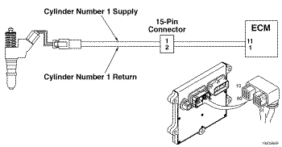

Código de Falha 311
|
| CÓDIGO | RAZÃO | EFEITO |
| Código de Falha: 311 PID: S001 SPN: 651 FMI: 6/6 LÂMPADA: Âmbar SRT: |
Circuito do Acionador do Solenóide do Injetor do Cilindro No. 1 - Corrente Acima da Normal ou Circuito Aterrado. Detectada corrente no circuito do injetor No. 1 com a voltagem desligada. |
A corrente para o injetor está desligada. Dificuldade na partida ou funcionamento irregular do motor. |
|
 ISM11 CM876 SN - Circuito do Acionador do Solenóide do Injetor do Cilindro No. 1
|
As válvulas-solenóide dos injetores são atuadas pelo ECM para controlar a medição do débito do combustível e a sincronização. Cada solenóide de injetor é conectado ao ECM através de um fio de alimentação e um fio de retorno. Um pulso elétrico é enviado ao injetor pelo ECM através do fio de alimentação e retorna ao ECM pelo fio de retorno depois de atuar o solenóide. Cada válvula solenóide é normalmente aberta, e é fechada somente por um pulso elétrico enviado pelo ECM durante a injeção e medição de débito de combustível.
O motor ISM tem um chicote interno do atuador que se conecta ao chicote externo do motor através de um conector de 15 pinos no lado dianteiro da carcaça dos balanceiros. O chicote interno do atuador encontra-se no interior da carcaça dos balanceiros, no lado direito. O chicote tem seis conectores espaçados ao longo de seu comprimento, um para cada solenóide de injetor. Esses conectores são conectados no conector 'rabo-de-porco' de cada injetor.
Este diagnóstico é executado continuamente quando a rotação do motor é maior que 0 rpm.
O ECM detecta que o circuito do injetor está em curto com uma fonte de voltagem, em curto com uma fonte de bateria, ou resistência baixa do solenóide do injetor.
O ECM apagará imediatamente a luz de verificação do motor (CHECK ENGINE) depois de o diagnóstico ser executado com êxito.
Possíveis causas deste código de falha: